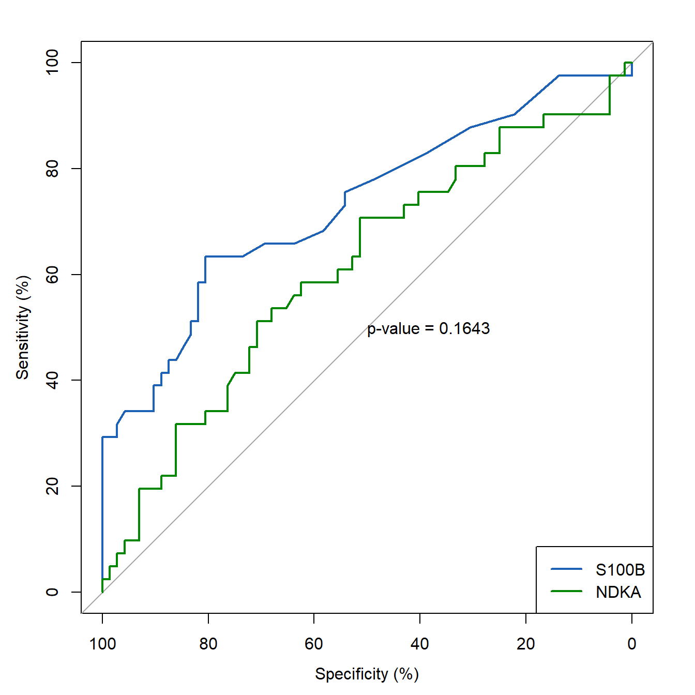

27 ROC曲线的显著性检验
今天说一说ROC(AUC)的比较。
27.1 二分类资料的ROC比较
可以通过pROC包实现的，使用其中roc.test()函数可实现两个ROC
的Delong检验。
使用pROC包的aSAH数据，其中outcome列是结果变量，1代表Good，2代表Poor。
library(pROC)
## Type 'citation("pROC")' for a citation.
##
## Attaching package: 'pROC'
## The following objects are masked from 'package:stats':
##
## cov, smooth, var
data(aSAH)
dim(aSAH)
## [1] 113 7
str(aSAH)
## 'data.frame': 113 obs. of 7 variables:
## $ gos6 : Ord.factor w/ 5 levels "1"<"2"<"3"<"4"<..: 5 5 5 5 1 1 4 1 5 4 ...
## $ outcome: Factor w/ 2 levels "Good","Poor": 1 1 1 1 2 2 1 2 1 1 ...
## $ gender : Factor w/ 2 levels "Male","Female": 2 2 2 2 2 1 1 1 2 2 ...
## $ age : int 42 37 42 27 42 48 57 41 49 75 ...
## $ wfns : Ord.factor w/ 5 levels "1"<"2"<"3"<"4"<..: 1 1 1 1 3 2 5 4 1 2 ...
## $ s100b : num 0.13 0.14 0.1 0.04 0.13 0.1 0.47 0.16 0.18 0.1 ...
## $ ndka : num 3.01 8.54 8.09 10.42 17.4 ...构建两个ROC对象，然后直接比较即可：
roc1 <- roc(aSAH$outcome,aSAH$s100b)
## Setting levels: control = Good, case = Poor
## Setting direction: controls < cases
roc2 <- roc(aSAH$outcome,aSAH$ndka)
## Setting levels: control = Good, case = Poor
## Setting direction: controls < cases
res <- roc.test(roc1,roc2)
res
##
## DeLong's test for two correlated ROC curves
##
## data: roc1 and roc2
## Z = 1.3908, p-value = 0.1643
## alternative hypothesis: true difference in AUC is not equal to 0
## 95 percent confidence interval:
## -0.04887061 0.28769174
## sample estimates:
## AUC of roc1 AUC of roc2
## 0.7313686 0.6119580这个函数里面有个method参数：delong/bootstrap/venkatraman，默认是delong，delong和bootstrap用于比较AUC，如果只是ROC曲线的比较，需要用venkatraman。关于这几种方法的具体原理，大家可以去翻相关的论文~
roc.test只能用于两个ROC的比较，如果是多个比较，可以使用MedCalc软件，这个是和SPSS类似的软件，只要点点点即可。
当然也是可以直接画在图里的：
rocobj1 <- plot.roc(aSAH$outcome, aSAH$s100,percent=TRUE, col="#1c61b6")
## Setting levels: control = Good, case = Poor
## Setting direction: controls < cases
rocobj2 <- lines.roc(aSAH$outcome, aSAH$ndka, percent=TRUE, col="#008600")
## Setting levels: control = Good, case = Poor
## Setting direction: controls < cases
legend("bottomright", legend=c("S100B", "NDKA"), col=c("#1c61b6", "#008600"), lwd=2)
testobj <- roc.test(rocobj1, rocobj2)
text(50, 50, labels=paste("p-value =", format.pval(testobj$p.value)), adj=c(0, .5))
当然你也可以用其他非参数检验的方法进行比较，比如mann whitney u检验。
27.2 生存资料ROC的比较
使用timeROC包实现。
还是用之前推文中用过的例子，获取数据请翻看之前的推文~
使用其中的df2这个数据：
str(df2)
## 'data.frame': 297 obs. of 8 variables:
## $ event : num 0 0 1 0 0 1 0 0 0 0 ...
## $ age : int 59 63 65 73 59 66 56 42 61 48 ...
## $ riskScore: num -0.249 -0.511 -0.211 -0.427 0.279 ...
## $ futime : num 3.03 1.16 1.82 1.52 1.34 ...
## $ gender : num 2 2 2 1 2 2 1 2 2 2 ...
## $ t : num 4 4 4 3 3 3 5 3 NA 4 ...
## $ n : num 1 5 1 1 1 1 3 1 NA 1 ...
## $ m : num 1 1 1 1 1 3 1 1 3 3 ...构建几个timeROC:
# riskScore的ROC曲线
ROC.risk <- timeROC(T=df2$futime,
delta=df2$event,
marker=df2$riskScore,
cause=1,
weighting="marginal",
times=3, # c(1,2)
iid=TRUE)
# age的ROC曲线
ROC.age <- timeROC(T=df2$futime,
delta=df2$event,
marker=df2$age,
cause=1,
weighting="marginal",
times=3, # c(1,2)
iid=TRUE)比较就用compare()函数即可：
compare(ROC.risk, ROC.age)
## $p_values_AUC
## t=0 t=3
## NA 0.4544231同时使用多个时间点也是可以的：
# riskScore的ROC曲线
ROC.risk <- timeROC(T=df2$futime,
delta=df2$event,
marker=df2$riskScore,
cause=1,
weighting="marginal",
times=c(1,2),
iid=TRUE)
# age的ROC曲线
ROC.age <- timeROC(T=df2$futime,
delta=df2$event,
marker=df2$age,
cause=1,
weighting="marginal",
times=c(1,2),
iid=TRUE)
compare(ROC.risk, ROC.age)
## $p_values_AUC
## t=1 t=2
## 0.09758546 0.27995259
compare(ROC.risk, ROC.age, adjusted = T) # 计算调整p值
## $p_values_AUC
## t=1 t=2
## Non-adjusted 0.09758546 0.2799526
## Adjusted 0.14983636 0.3984702
##
## $Cor
## [,1] [,2]
## [1,] 1.0000000 0.7750774
## [2,] 0.7750774 1.0000000画图就不演示了，可以参考前面的内容。